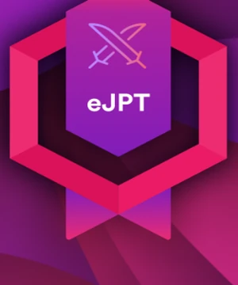

PROFESSIONAL CERTIFICATION · INE SECURITY
eJPT / Junior Penetration Tester
Exam-based professional certification awarded by INE Security on 4 November 2026.

Official eJPT certificate / PDFZoom, download or print from the toolbar below
The verification link opens INE's public credential page. No exam score or domain results are displayed here.